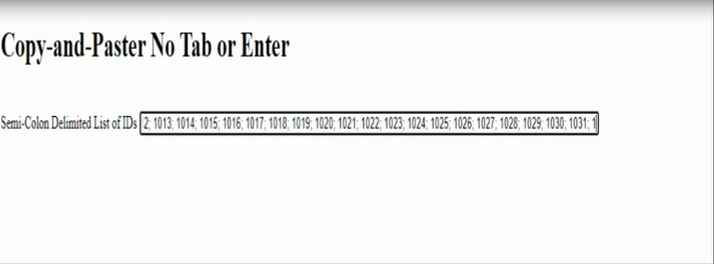
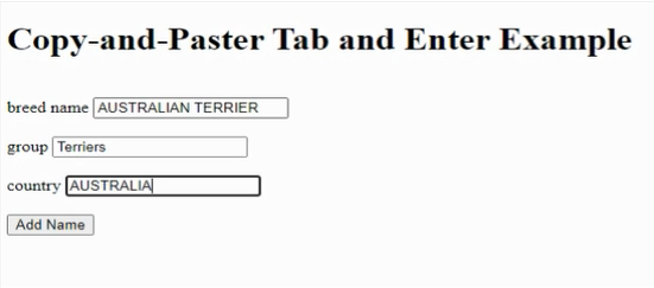
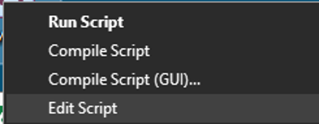
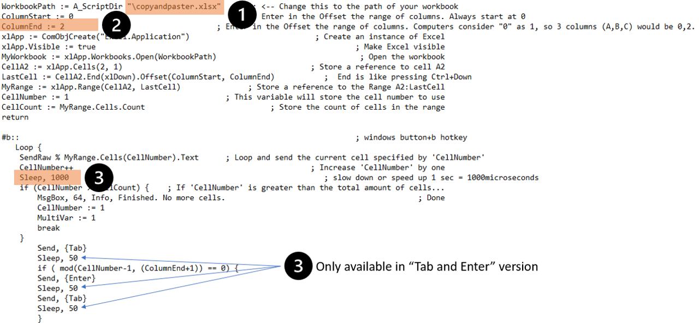
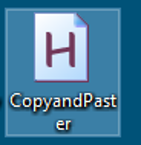

Automated Copy and Paste from Excel to Any Application
This is a tool that simplifies having to copy and paste a lot of data from excel to any application, especially when the destination forces you to manually copy and paste each value one-by-one
There are two parts:
1) Create your list of contents in Microsoft Excel. There can be any number of columns and rows. I provide a sample Microsoft Excel file that has the file name preloaded in the AutoHotkey script (just add your data to the workbook). Just one last thing to modify.
2) A shortcut using AutoHotKey that then automatically starts the process until it hits a blank cell
(Note: AutoHotkey works only on Windows)
Direct Video Link
Direct YouTube Link to Automated Copy and Paste from Excel to Any Application VideoGetting started:
- If you do not have it installed already, download and install the current version of AutoHotkey: https://autohotkey.com/download/
- SAVE the CopyandPaster file linked here anywhere (network drive, desktop, your documents, etc). For this demonstration, I recommend placing the file on your desktop. There are three different versions of the script. See descriptions and links below:
- This version of the script is meant to be ran in a single field, turning a list into a continuous string. Great for producing deliminted lists (comma, semicoln, etc). In the example, there are three columns (and ID, a semicoln, and a space), and the script types each value one after another. CopyandPaster (No Tab or Enter) AutoHotKey File 
- This script is designed to send a "tab" keystroke after each value. This works well in applications that can accept multiple parameters, usually dynamically creating another row with each entry. In the example, there are two columns, and after the second column is populated, the application opens another row for more until the end: CopyandPaster (Tab) AutoHotKey File
- This script is the same as number 2, but sends an "enter" keystroke after the value in the last column of a row in the MS Excel sheet. This version best works in filling out a form repeatedly. It does send an additional "tab" keystroke after "enter" to get the cursor back on track on the form, as seen in the example:CopyandPaster (Tab and Enter) AutoHotKey File 
- SAVE a Microsoft Excel file that contains what you want copied and pasted to a destination application. NOTE, the script assumes you have a HEADER on the Excel worksheet. For this demonstration, I have provided a sample file (named copyandpaster.xlsx). I recommend placing the file on your desktop: CopyandPaster Excel File
- To EDIT the script, right-click the CopyandPaster file and select Edit Script 
- Suggested modifiable items are highlighted 
- Update the path name of your MS Excel workbook. IF you are using the instructions above and using the same desktop path and file name, then ignore.
- Update number of columns on the spreadsheet. 0, 0 = 1 column. 0, 1 = 2 columns. 0, 2 = 3 columns. And so on. By default, 2 columns are set. Computers like to start counting at 0.
- Update the speed of the script. For example 500 microseconds = 0.5 seconds. Depending on what is receiving the data, it might not be able to handle a fast velocity.

Using the script:
- Simply double clickthe CopyandPaster file. Once it is running, the script will open an instance of the Excel workbook. There is nothing to do with the workbook. 
- Once your cursor is in the destination application, press this keystroke combo to activate the script: Windows button + b
- When the script completes, it will display a window stated it is finished
- If the script falls off track and needs to be aborted immediately, just press the escape key (Esc) or right-click the running script in your tray and exit
References: